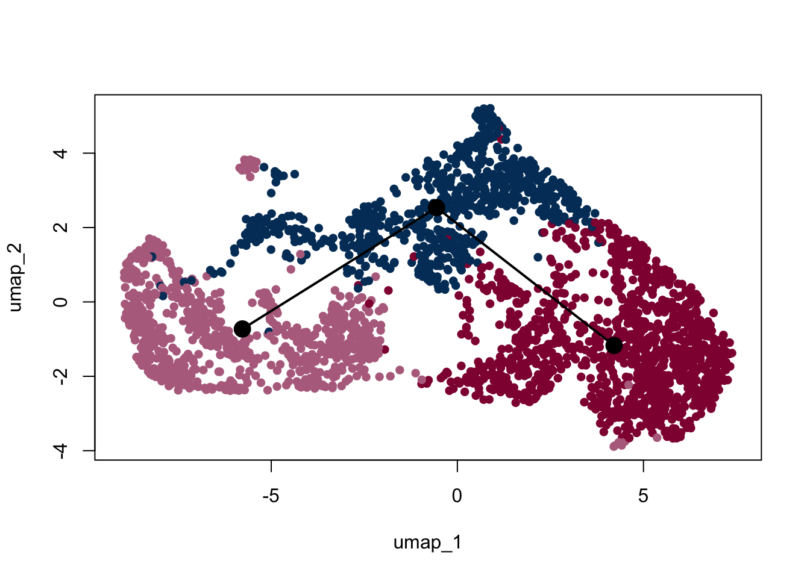
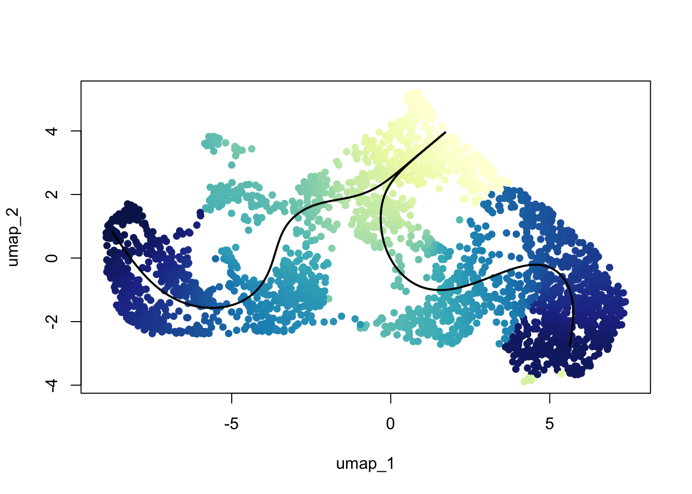
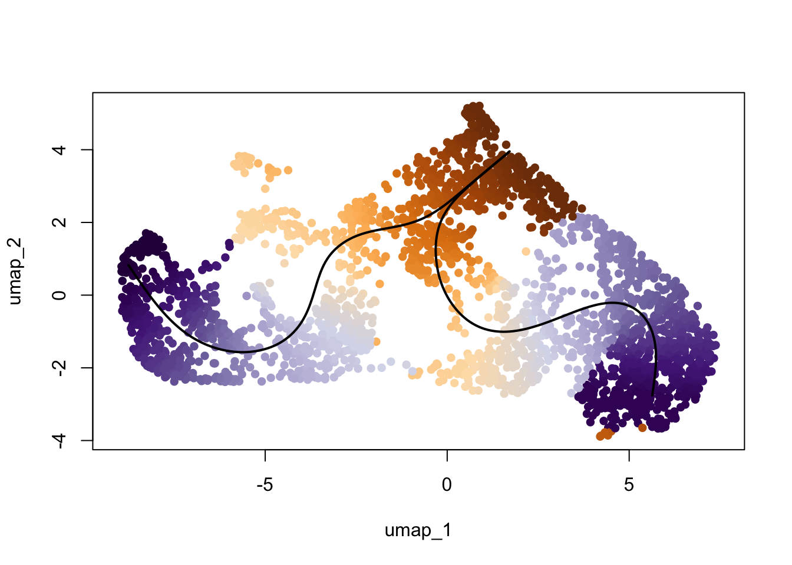

E18 mLN pLN Ccl19EYFP+
A.DeMartin
2025-05-23
Last updated: 2025-07-15
Checks: 6 1
Knit directory: LNdevMouse24.2/
This reproducible R Markdown analysis was created with workflowr (version 1.7.1). The Checks tab describes the reproducibility checks that were applied when the results were created. The Past versions tab lists the development history.
The R Markdown is untracked by Git. To know which version of the R
Markdown file created these results, you’ll want to first commit it to
the Git repo. If you’re still working on the analysis, you can ignore
this warning. When you’re finished, you can run
wflow_publish to commit the R Markdown file and build the
HTML.
Great job! The global environment was empty. Objects defined in the global environment can affect the analysis in your R Markdown file in unknown ways. For reproduciblity it’s best to always run the code in an empty environment.
The command set.seed(20250625) was run prior to running
the code in the R Markdown file. Setting a seed ensures that any results
that rely on randomness, e.g. subsampling or permutations, are
reproducible.
Great job! Recording the operating system, R version, and package versions is critical for reproducibility.
Nice! There were no cached chunks for this analysis, so you can be confident that you successfully produced the results during this run.
Great job! Using relative paths to the files within your workflowr project makes it easier to run your code on other machines.
Great! You are using Git for version control. Tracking code development and connecting the code version to the results is critical for reproducibility.
The results in this page were generated with repository version f7184ed. See the Past versions tab to see a history of the changes made to the R Markdown and HTML files.
Note that you need to be careful to ensure that all relevant files for
the analysis have been committed to Git prior to generating the results
(you can use wflow_publish or
wflow_git_commit). workflowr only checks the R Markdown
file, but you know if there are other scripts or data files that it
depends on. Below is the status of the Git repository when the results
were generated:
Ignored files:
Ignored: .DS_Store
Ignored: .Rhistory
Ignored: .Rproj.user/
Ignored: analysis/.DS_Store
Ignored: analysis/figure/
Ignored: data/to figshare/
Ignored: data/tradeSEQ/
Untracked files:
Untracked: analysis/E18_mLN_iLN_EYFPonly_Ccl19_marker.Rmd
Unstaged changes:
Modified: analysis/E18_mLN_iLN_EYFPonly_marker.Rmd
Modified: analysis/index.Rmd
Note that any generated files, e.g. HTML, png, CSS, etc., are not included in this status report because it is ok for generated content to have uncommitted changes.
There are no past versions. Publish this analysis with
wflow_publish() to start tracking its development.
preprocess
load packages
library(ExploreSCdataSeurat3)
library(runSeurat3)
library(Seurat)
library(ggpubr)
library(pheatmap)
library(SingleCellExperiment)
library(dplyr)
library(tidyverse)
library(viridis)
library(muscat)
library(circlize)
library(destiny)
library(scater)
library(metap)
library(multtest)
library(clusterProfiler)
library(org.Mm.eg.db)
library(msigdbr)
library(enrichplot)
library(DOSE)
library(grid)
library(gridExtra)
library(ggupset)
library(VennDiagram)
library(NCmisc)
library(slingshot)
library(here)
library(RColorBrewer)set color vectors
coltimepoint <- c("#440154FF", "#3B528BFF", "#21908CFF", "#5DC863FF")
names(coltimepoint) <- c("E18", "P7", "3w", "8w")
collocation <- c("#61baba", "#ba6161")
names(collocation) <- c("iLN", "mLN")load object all
basedir <- here()
fileNam <- paste0(basedir, "/data/AllSamplesMerged_seurat.rds")
seuratM <- readRDS(fileNam)
table(seuratM$age)
3w 8w E17to7wk E18 P7
12291 32503 19685 33903 10005 subset E18
seuratA <- subset(seuratM, age == "E18")
table(seuratA$age)
E18
33903 ## rerun seurat
seuratA <- NormalizeData (object = seuratA)
seuratA <- FindVariableFeatures(object = seuratA)
seuratA <- ScaleData(object = seuratA, verbose = TRUE)
seuratA <- RunPCA(object=seuratA, npcs = 30, verbose = FALSE)
seuratA <- RunTSNE(object=seuratA, reduction="pca", dims = 1:20)
seuratA <- RunUMAP(object=seuratA, reduction="pca", dims = 1:20)
seuratA <- FindNeighbors(object = seuratA, reduction = "pca", dims= 1:20)
res <- c(0.25, 0.6, 0.8, 0.4)
for (i in 1:length(res)) {
seuratA <- FindClusters(object = seuratA, resolution = res[i], random.seed = 1234)
}Modularity Optimizer version 1.3.0 by Ludo Waltman and Nees Jan van Eck
Number of nodes: 33903
Number of edges: 1106453
Running Louvain algorithm...
Maximum modularity in 10 random starts: 0.9482
Number of communities: 16
Elapsed time: 6 seconds
Modularity Optimizer version 1.3.0 by Ludo Waltman and Nees Jan van Eck
Number of nodes: 33903
Number of edges: 1106453
Running Louvain algorithm...
Maximum modularity in 10 random starts: 0.9122
Number of communities: 20
Elapsed time: 6 seconds
Modularity Optimizer version 1.3.0 by Ludo Waltman and Nees Jan van Eck
Number of nodes: 33903
Number of edges: 1106453
Running Louvain algorithm...
Maximum modularity in 10 random starts: 0.8973
Number of communities: 25
Elapsed time: 5 seconds
Modularity Optimizer version 1.3.0 by Ludo Waltman and Nees Jan van Eck
Number of nodes: 33903
Number of edges: 1106453
Running Louvain algorithm...
Maximum modularity in 10 random starts: 0.9310
Number of communities: 18
Elapsed time: 6 secondsdimplot all
clustering
Idents(seuratA) <- seuratA$RNA_snn_res.0.25
DimPlot(seuratA, reduction = "umap", group.by = "RNA_snn_res.0.25" ,
pt.size = 0.1, label = T, shuffle = T) +
theme_bw() +
theme(axis.text = element_blank(), axis.ticks = element_blank(),
panel.grid.minor = element_blank()) +
xlab("umap1") +
ylab("umap2")
location
DimPlot(seuratA, reduction = "umap", group.by = "location" ,
pt.size = 0.1, label = T, shuffle = T) +
theme_bw() +
theme(axis.text = element_blank(), axis.ticks = element_blank(),
panel.grid.minor = element_blank()) +
xlab("umap1") +
ylab("umap2")
features
genes <- data.frame(gene=rownames(seuratA)) %>%
mutate(geneID=gsub("^.*\\.", "", gene))
selGenes <- data.frame(geneID=c("Ptprc", "Msln", "Mki67", "Kcnn3", "Tcf21", "Pecam1", "Lyve1", "Ccl21a", "Icam1", "Cd34", "Mrc1", "Rosa26eyfp", "Krt19", "Acta2","Myh11", "Cxcl13", "Epcam", "Adipoq")) %>%
left_join(., genes, by = "geneID")
pList <- sapply(selGenes$gene, function(x){
p <- FeaturePlot(seuratA, reduction = "umap",
features = x,
cols=c("lightgrey","darkred"),
order = T)+
theme(legend.position="right")
plot(p)
})


filter
## filter and Pecam+ cells (cluster 15)
## filter immune cells (cluseter 14)
table(seuratA$RNA_snn_res.0.25)
seuratF <- subset(seuratA, RNA_snn_res.0.25 %in% c("15", "14"), invert = TRUE)
table(seuratF$RNA_snn_res.0.25)
seuratE18fil <- seuratF
remove(seuratF)rerun after fil
load object fil
fileNam <- paste0(basedir, "/data/E18fil_seurat.rds")
seuratE18fil <- readRDS(fileNam)dimplot E18 fil
clustering
Idents(seuratE18fil) <- seuratE18fil$RNA_snn_res.0.25
colPal <- c("#DAF7A6", "#FFC300", "#FF5733", "#C70039", "#900C3F", "#b66e8d",
"#61a4ba", "#6178ba", "#54a87f", "#25328a",
"#b6856e", "#0073C2FF", "#EFC000FF", "#868686FF", "#CD534CFF",
"#7AA6DCFF", "#003C67FF", "#8F7700FF", "#3B3B3BFF", "#A73030FF",
"#4A6990FF")[1:length(unique(seuratE18fil$RNA_snn_res.0.25))]
names(colPal) <- unique(seuratE18fil$RNA_snn_res.0.25)
DimPlot(seuratE18fil, reduction = "umap", group.by = "RNA_snn_res.0.25",
cols = colPal, label = TRUE)+
theme_bw() +
theme(axis.text = element_blank(), axis.ticks = element_blank(),
panel.grid.minor = element_blank()) +
xlab("UMAP1") +
ylab("UMAP2")
location
DimPlot(seuratE18fil, reduction = "umap", group.by = "location",
cols = collocation)+
theme_bw() +
theme(axis.text = element_blank(), axis.ticks = element_blank(),
panel.grid.minor = element_blank()) +
xlab("UMAP1") +
ylab("UMAP2")
saveRDS(seuratE18fil, file=paste0(basedir, "/data/E18fil_seurat.rds"))subset EYFP expressing cells
table(seuratE18fil$EYFP)
seuratE18EYFPv2 <- subset(seuratE18fil, EYFP == "pos")
table(seuratE18EYFPv2$EYFP)
DimPlot(seuratE18EYFPv2, reduction = "umap", group.by = "RNA_snn_res.0.25",
cols = colPal, label = TRUE)
#rerun seurat
seuratE18EYFPv2 <- NormalizeData (object = seuratE18EYFPv2)
seuratE18EYFPv2<- FindVariableFeatures(object = seuratE18EYFPv2)
seuratE18EYFPv2 <- ScaleData(object = seuratE18EYFPv2, verbose = TRUE)
seuratE18EYFPv2 <- RunPCA(object=seuratE18EYFPv2, npcs = 30, verbose = FALSE)
seuratE18EYFPv2 <- RunTSNE(object=seuratE18EYFPv2, reduction="pca", dims = 1:20)
seuratE18EYFPv2 <- RunUMAP(object=seuratE18EYFPv2, reduction="pca", dims = 1:20)
seuratE18EYFPv2 <- FindNeighbors(object = seuratE18EYFPv2, reduction = "pca", dims= 1:20)
res <- c(0.25, 0.6, 0.8, 0.4)
for (i in 1:length(res)) {
seuratE18EYFPv2 <- FindClusters(object = seuratE18EYFPv2, resolution = res[i], random.seed = 1234)
}saveRDS(seuratE18EYFPv2, file=paste0(basedir, "/data/E18_EYFPv2_Ccl19_seurat.rds"))load object E18 EYFP+
fileNam <- paste0(basedir, "/data/E18_EYFPv2_Ccl19_seurat.rds")
seuratE18EYFPv2 <- readRDS(fileNam)dimplot E18 EYFP+
clustering
Idents(seuratE18EYFPv2) <- seuratE18EYFPv2$RNA_snn_res.0.25
colPal <- c("#DAF7A6", "#FFC300", "#FF5733", "#C70039", "#900C3F", "#b66e8d",
"#61a4ba", "#6178ba", "#54a87f", "#25328a",
"#b6856e", "#0073C2FF", "#EFC000FF", "#868686FF", "#CD534CFF",
"#7AA6DCFF", "#003C67FF", "#8F7700FF", "#3B3B3BFF", "#A73030FF",
"#4A6990FF")[1:length(unique(seuratE18EYFPv2$RNA_snn_res.0.25))]
names(colPal) <- unique(seuratE18EYFPv2$RNA_snn_res.0.25)
DimPlot(seuratE18EYFPv2, reduction = "umap", group.by = "RNA_snn_res.0.25",
cols = colPal, label = TRUE)+
theme_bw() +
theme(axis.text = element_blank(), axis.ticks = element_blank(),
panel.grid.minor = element_blank()) +
xlab("UMAP1") +
ylab("UMAP2")
location
DimPlot(seuratE18EYFPv2, reduction = "umap", group.by = "location",
cols = collocation)+
theme_bw() +
theme(axis.text = element_blank(), axis.ticks = element_blank(),
panel.grid.minor = element_blank()) +
xlab("UMAP1") +
ylab("UMAP2")
features E18 EYFP+
genes <- data.frame(gene=rownames(seuratE18EYFPv2)) %>%
mutate(geneID=gsub("^.*\\.", "", gene))
selGenes <- data.frame(geneID=c("Rosa26eyfp", "Mki67", "Acta2", "Myh11", "Ccl19", "Cxcl13", "Cd34", "Icam1","Vcam1", "Pi16")) %>%
left_join(., genes, by = "geneID")
pList <- sapply(selGenes$gene, function(x){
p <- FeaturePlot(seuratE18EYFPv2, reduction = "umap",
features = x,
cols=c("lightgrey","darkred"),
order = T)+
theme(legend.position="right")
plot(p)
})


integrate data across location
Idents(seuratE18EYFPv2) <- seuratE18EYFPv2$location
seurat.list <- SplitObject(object = seuratE18EYFPv2, split.by = "location")
for (i in 1:length(x = seurat.list)) {
seurat.list[[i]] <- NormalizeData(object = seurat.list[[i]],
verbose = FALSE)
seurat.list[[i]] <- FindVariableFeatures(object = seurat.list[[i]],
selection.method = "vst", nfeatures = 2000, verbose = FALSE)
}
seurat.anchors <- FindIntegrationAnchors(object.list = seurat.list, dims = 1:20)
seuratE18EYFPv2.int <- IntegrateData(anchorset = seurat.anchors, dims = 1:20)
DefaultAssay(object = seuratE18EYFPv2.int) <- "integrated"
## rerun seurat
seuratE18EYFPv2.int <- ScaleData(object = seuratE18EYFPv2.int, verbose = FALSE,
features = rownames(seuratE18EYFPv2.int))
seuratE18EYFPv2.int <- RunPCA(object = seuratE18EYFPv2.int, npcs = 20, verbose = FALSE)
seuratE18EYFPv2.int <- RunTSNE(object = seuratE18EYFPv2.int, recuction = "pca", dims = 1:20)
seuratE18EYFPv2.int <- RunUMAP(object = seuratE18EYFPv2.int, recuction = "pca", dims = 1:20)
seuratE18EYFPv2.int <- FindNeighbors(object = seuratE18EYFPv2.int, reduction = "pca", dims = 1:20)
res <- c(0.6, 0.8, 0.4, 0.25)
for (i in 1:length(res)){
seuratE18EYFPv2.int <- FindClusters(object = seuratE18EYFPv2.int, resolution = res[i],
random.seed = 1234)
}saveRDS(seuratE18EYFPv2.int, file=paste0(basedir, "/data/E18EYFPv2_integrated_Ccl19_seurat.rds"))load object E18 EYFP+ integrated
fileNam <- paste0(basedir, "/data/E18EYFPv2_integrated_Ccl19_seurat.rds")
seuratE18EYFPv2.int <- readRDS(fileNam)DefaultAssay(object = seuratE18EYFPv2.int) <- "RNA"
seuratE18EYFPv2.int$intCluster <- seuratE18EYFPv2.int$integrated_snn_res.0.25
Idents(seuratE18EYFPv2.int) <- seuratE18EYFPv2.int$intCluster
colPal <- c("#DAF7A6", "#FFC300", "#FF5733", "#C70039", "#900C3F", "#b66e8d",
"#61a4ba", "#6178ba", "#54a87f", "#25328a", "#b6856e",
"#ba6161", "#20714a", "#0073C2FF", "#EFC000FF", "#868686FF",
"#CD534CFF","#7AA6DCFF", "#003C67FF", "#8F7700FF", "#3B3B3BFF",
"#A73030FF", "#4A6990FF")[1:length(unique(seuratE18EYFPv2.int$intCluster))]
names(colPal) <- unique(seuratE18EYFPv2.int$intCluster)dimplot E18 EYFP+ int
clustering
DimPlot(seuratE18EYFPv2.int, reduction = "umap",
label = T, shuffle = T, cols = colPal) +
theme_bw() +
theme(axis.text = element_blank(), axis.ticks = element_blank(),
panel.grid.minor = element_blank()) +
xlab("umap1") +
ylab("umap2")
location
DimPlot(seuratE18EYFPv2.int, reduction = "umap", group.by = "location", cols = collocation,
shuffle = T) +
theme_bw() +
theme(axis.text = element_blank(), axis.ticks = element_blank(),
panel.grid.minor = element_blank()) +
xlab("umap1") +
ylab("umap2")
assign label
seuratE18EYFPv2.int$label <- "label"
seuratE18EYFPv2.int$label[which(seuratE18EYFPv2.int$intCluster == "0")] <- "cluster1"
seuratE18EYFPv2.int$label[which(seuratE18EYFPv2.int$intCluster == "1")] <- "Prolif"
seuratE18EYFPv2.int$label[which(seuratE18EYFPv2.int$intCluster == "2")] <- "cluster3"
seuratE18EYFPv2.int$label[which(seuratE18EYFPv2.int$intCluster == "3")] <- "cluster4"
seuratE18EYFPv2.int$label[which(seuratE18EYFPv2.int$intCluster == "4")] <- "cluster2"
seuratE18EYFPv2.int$label[which(seuratE18EYFPv2.int$intCluster == "5")] <- "Adipoc"
seuratE18EYFPv2.int$label[which(seuratE18EYFPv2.int$intCluster == "6")] <- "Mesothelial"
table(seuratE18EYFPv2.int$label)
Adipoc cluster1 cluster2 cluster3 cluster4 Mesothelial Prolif
17 852 292 514 450 15 591 ##order
seuratE18EYFPv2.int$label <- factor(seuratE18EYFPv2.int$label, levels = c("cluster1", "cluster2", "cluster3", "cluster4", "Adipoc", "Mesothelial", "Prolif"))
table(seuratE18EYFPv2.int$label)
cluster1 cluster2 cluster3 cluster4 Adipoc Mesothelial Prolif
852 292 514 450 17 15 591 colLab <- c("#900C3F","#b66e8d", "#003C67FF",
"#e3953d", "#714542", "#b6856e","grey")
names(colLab) <- c("cluster1", "cluster2", "cluster3", "cluster4", "Adipoc", "Mesothelial", "Prolif")label
colLab <- c("#900C3F","#b66e8d", "#003C67FF",
"#e3953d", "#714542", "#b6856e","grey")
names(colLab) <- c("cluster1", "cluster2", "cluster3", "cluster4", "Adipoc", "Mesothelial", "Prolif")
DimPlot(seuratE18EYFPv2.int, reduction = "umap", group.by = "label", cols = colLab)+
theme_bw() +
theme(axis.text = element_blank(), axis.ticks = element_blank(),
panel.grid.minor = element_blank()) +
xlab("UMAP1") +
ylab("UMAP2")
DimPlot(seuratE18EYFPv2.int, reduction = "umap", group.by = "label", pt.size=0.5,
cols = colLab, shuffle = T)+
theme_void()
DimPlot(seuratE18EYFPv2.int, reduction = "umap", group.by = "label", pt.size=0.5,
cols = colLab, shuffle = T)+
theme_void() +
theme(legend.position = "none") 
dotplot FRC marker E18 EYFP+ int
seurat_markers <- data.frame(gene=c("Vcam1", "Icam1",
"Cxcl13", "Ccl19", "Ccl21a","Tnfsf11", "Grem1","Ifitm1","Cxcl1","Ifitm3","Ccl2","Nfkbia","Des",
"Mfap5","Cdkn1c","Akap12","Anxa2","Lox","Gsn","Basp1","Fndc1","Sparc","Col1a1","Fbn2","Nr4a1","Fbln1","Cd34","Pi16",
"Fbln5","Tm4sf1", "Ntrk3", "Fhl1", "Rgs7bp", "Adamts2", "Mpped2", "Ramp1", "Pdgfrl", "Eln", "Hspb2","Mgp", "Actg2","Acta2", "Myh11","Mcam","Adipoq", "Mki67", "Msln"))
genes <- data.frame(geneID=rownames(seuratE18EYFPv2.int)) %>%
mutate(gene=gsub(".*\\.", "", geneID))
markerAll <- seurat_markers %>% left_join(., genes, by="gene")
## Dotplot all
Idents(seuratE18EYFPv2.int) <- seuratE18EYFPv2.int$label
DotPlot(seuratE18EYFPv2.int, assay="RNA", features = rev(markerAll$geneID), scale =T,
cluster.idents = F) +
scale_color_viridis_c() +
coord_flip() +
theme(axis.text.x = element_text(angle = 90, hjust = 1)) +
scale_x_discrete(breaks=rev(markerAll$geneID), labels=rev(markerAll$gene)) +
xlab("") + ylab("")
subset FRCs and rerun
table(seuratE18EYFPv2.int$label)
cluster1 cluster2 cluster3 cluster4 Adipoc Mesothelial Prolif
852 292 514 450 17 15 591 seuratE18EYFPv2.int <- subset(seuratE18EYFPv2.int, label %in% c("Adipoc", "Mesothelial"), invert = TRUE)
table(seuratE18EYFPv2.int$label)
cluster1 cluster2 cluster3 cluster4 Prolif
852 292 514 450 591 table(seuratE18EYFPv2.int$orig.ident)
2699 ## rerun seurat
DefaultAssay(object = seuratE18EYFPv2.int) <- "integrated"
seuratE18EYFPv2.int <- ScaleData(object = seuratE18EYFPv2.int, verbose = FALSE,
features = rownames(seuratE18EYFPv2.int))
seuratE18EYFPv2.int <- RunPCA(object = seuratE18EYFPv2.int, npcs = 20, verbose = FALSE)
seuratE18EYFPv2.int <- RunTSNE(object = seuratE18EYFPv2.int, recuction = "pca", dims = 1:20)
seuratE18EYFPv2.int <- RunUMAP(object = seuratE18EYFPv2.int, recuction = "pca", dims = 1:20)
seuratE18EYFPv2.int <- FindNeighbors(object = seuratE18EYFPv2.int, reduction = "pca", dims = 1:20)
res <- c(0.1, 0.6, 0.8, 0.4, 0.25)
for (i in 1:length(res)){
seuratE18EYFPv2.int <- FindClusters(object = seuratE18EYFPv2.int, resolution = res[i],
random.seed = 1234)
}Modularity Optimizer version 1.3.0 by Ludo Waltman and Nees Jan van Eck
Number of nodes: 2699
Number of edges: 93881
Running Louvain algorithm...
Maximum modularity in 10 random starts: 0.9410
Number of communities: 3
Elapsed time: 0 seconds
Modularity Optimizer version 1.3.0 by Ludo Waltman and Nees Jan van Eck
Number of nodes: 2699
Number of edges: 93881
Running Louvain algorithm...
Maximum modularity in 10 random starts: 0.8333
Number of communities: 8
Elapsed time: 0 seconds
Modularity Optimizer version 1.3.0 by Ludo Waltman and Nees Jan van Eck
Number of nodes: 2699
Number of edges: 93881
Running Louvain algorithm...
Maximum modularity in 10 random starts: 0.8082
Number of communities: 12
Elapsed time: 0 seconds
Modularity Optimizer version 1.3.0 by Ludo Waltman and Nees Jan van Eck
Number of nodes: 2699
Number of edges: 93881
Running Louvain algorithm...
Maximum modularity in 10 random starts: 0.8679
Number of communities: 8
Elapsed time: 0 seconds
Modularity Optimizer version 1.3.0 by Ludo Waltman and Nees Jan van Eck
Number of nodes: 2699
Number of edges: 93881
Running Louvain algorithm...
Maximum modularity in 10 random starts: 0.8977
Number of communities: 5
Elapsed time: 0 secondsDefaultAssay(object = seuratE18EYFPv2.int) <- "RNA"
seuratE18EYFPv2.int$intCluster <- seuratE18EYFPv2.int$integrated_snn_res.0.1
Idents(seuratE18EYFPv2.int) <- seuratE18EYFPv2.int$intCluster
colPal <- c("#DAF7A6", "#FFC300", "#FF5733", "#C70039", "#900C3F", "#b66e8d",
"#61a4ba", "#6178ba", "#54a87f", "#25328a", "#b6856e",
"#ba6161", "#20714a", "#0073C2FF", "#EFC000FF", "#868686FF",
"#CD534CFF","#7AA6DCFF", "#003C67FF", "#8F7700FF", "#3B3B3BFF",
"#A73030FF", "#4A6990FF")[1:length(unique(seuratE18EYFPv2.int$intCluster))]
names(colPal) <- unique(seuratE18EYFPv2.int$intCluster)dimplot E18 EYFP+ fil
clustering
DimPlot(seuratE18EYFPv2.int, reduction = "umap",
label = T, shuffle = T, cols = colPal) +
theme_bw() +
theme(axis.text = element_blank(), axis.ticks = element_blank(),
panel.grid.minor = element_blank()) +
xlab("umap1") +
ylab("umap2")
location
DimPlot(seuratE18EYFPv2.int, reduction = "umap", group.by = "location", cols = collocation,
shuffle = T) +
theme_bw() +
theme(axis.text = element_blank(), axis.ticks = element_blank(),
panel.grid.minor = element_blank()) +
xlab("umap1") +
ylab("umap2")
assign label
seuratE18EYFPv2.int$label <- "label"
seuratE18EYFPv2.int$label[which(seuratE18EYFPv2.int$intCluster == "0")] <- "cluster2"
seuratE18EYFPv2.int$label[which(seuratE18EYFPv2.int$intCluster == "1")] <- "cluster3"
seuratE18EYFPv2.int$label[which(seuratE18EYFPv2.int$intCluster == "2")] <- "cluster1"
table(seuratE18EYFPv2.int$label)
cluster1 cluster2 cluster3
760 1164 775 ##order
seuratE18EYFPv2.int$label <- factor(seuratE18EYFPv2.int$label, levels = c("cluster2", "cluster3", "cluster1"))
table(seuratE18EYFPv2.int$label)
cluster2 cluster3 cluster1
1164 775 760 colLab <- c("#900C3F","#b66e8d", "#003C67FF")
names(colLab) <- c("cluster2", "cluster3", "cluster1")label
DimPlot(seuratE18EYFPv2.int, reduction = "umap", group.by = "label", cols = colLab)+
theme_bw() +
theme(axis.text = element_blank(), axis.ticks = element_blank(),
panel.grid.minor = element_blank()) +
xlab("UMAP1") +
ylab("UMAP2")
DimPlot(seuratE18EYFPv2.int, reduction = "umap", group.by = "label", pt.size=0.5,
cols = colLab, shuffle = T)+
theme_void()
DimPlot(seuratE18EYFPv2.int, reduction = "umap", group.by = "label", pt.size=0.5,
cols = colLab, shuffle = T)+
theme_void() +
theme(legend.position = "none") 
featrue Ccl19
genes <- data.frame(gene=rownames(seuratE18EYFPv2.int)) %>%
mutate(geneID=gsub("^.*\\.", "", gene))
selGenes <- data.frame(geneID=c("Ccl19")) %>%
left_join(., genes, by = "geneID")
pList <- sapply(selGenes$gene, function(x){
p <- FeaturePlot(seuratE18EYFPv2.int, reduction = "umap",
features = x,
cols=c("lightgrey","darkred"),
order = FALSE)+
theme(legend.position="right")
plot(p)
})
dotplot marker E18 EYFP+ fil
seurat_markers <- data.frame(gene=c("Vcam1", "Icam1",
"Cxcl13", "Ccl19", "Ccl21a","Tnfsf11", "Grem1","Ifitm1","Cxcl1","Ifitm3","Ccl2","Nfkbia","Des",
"Mfap5","Cdkn1c","Akap12","Anxa2","Lox","Gsn","Basp1","Fndc1","Sparc","Col1a1","Fbn2","Nr4a1","Fbln1","Cd34","Pi16",
"Fbln5","Tm4sf1", "Ntrk3", "Fhl1", "Rgs7bp", "Adamts2", "Mpped2", "Ramp1", "Pdgfrl", "Eln", "Hspb2","Mgp", "Actg2","Acta2", "Myh11", "Mcam", "Mki67", "Ccna2", "Cdca8", "Prc1", "Aurkb"))
genes <- data.frame(geneID=rownames(seuratE18EYFPv2.int)) %>%
mutate(gene=gsub(".*\\.", "", geneID))
markerAll <- seurat_markers %>% left_join(., genes, by="gene")
## Dotplot all
Idents(seuratE18EYFPv2.int) <- seuratE18EYFPv2.int$label
DotPlot(seuratE18EYFPv2.int, assay="RNA", features = rev(markerAll$geneID), scale =T,
cluster.idents = F) +
scale_color_viridis_c() +
coord_flip() +
theme(axis.text.x = element_text(angle = 90, hjust = 1)) +
scale_x_discrete(breaks=rev(markerAll$geneID), labels=rev(markerAll$gene)) +
xlab("") + ylab("")
signatures
## convert seurat object to sce object
## exteract logcounts
logcounts <- GetAssayData(seuratE18EYFPv2.int, assay = "RNA", slot = "data")
counts <- GetAssayData(seuratE18EYFPv2.int, assay = "RNA", slot = "counts")
## extract reduced dims from integrated assay
pca <- Embeddings(seuratE18EYFPv2.int, reduction = "pca")
umap <- Embeddings(seuratE18EYFPv2.int, reduction = "umap")
## create sce object
sce <- SingleCellExperiment(assays =list (
counts = counts,
logcounts = logcounts
),
colData = seuratE18EYFPv2.int@meta.data,
rowData = data.frame(gene_id = rownames(logcounts)),
reducedDims = SimpleList(
PCA = pca,
UMAP = umap
))
genes <- data.frame(geneID=rownames(sce)) %>% mutate(gene=gsub(".*\\.", "", geneID))
pal = colorRampPalette(c("#053061", "#2166ac", "#f7f7f7", "#f4a582", "#b2183c", "#85122d"))selGenes <- data.frame(gene=c("Cxcl13", "Ccl19", "Ccl21a","Tnfsf11", "Grem1"))
signGenes <- genes %>% dplyr::filter(gene %in% selGenes$gene)
##make a count matrix of signature genes
sceSub <- sce[which(rownames(sce) %in% signGenes$geneID),]
cntMat <- rowSums(t(as.matrix(
sceSub@assays@data$logcounts)))/nrow(signGenes)
sceSub$sign <- cntMat
sceSub$sign2 <- sceSub$sign
sc <- scale_colour_gradientn(colours = pal(100), limits=c(0, 3))
sceSub$sign2[which(sceSub$sign > 3)] <- 3
##check max and min values
max(sceSub$sign)[1] 2.890401plotUMAP(sceSub, colour_by = "sign2", point_size = 1) + sc +
theme(legend.position = "none")
plotUMAP(sceSub, colour_by = "sign2", point_size = 1) + sc
selGenes <- data.frame(gene=c("Mfap5","Gsn","Fndc1","Col1a1","Cd34"))
signGenes <- genes %>% dplyr::filter(gene %in% selGenes$gene)
##make a count matrix of signature genes
sceSub <- sce[which(rownames(sce) %in% signGenes$geneID),]
cntMat <- rowSums(t(as.matrix(
sceSub@assays@data$logcounts)))/nrow(signGenes)
sceSub$sign <- cntMat
sceSub$sign2 <- sceSub$sign
sc <- scale_colour_gradientn(colours = pal(100), limits=c(0, 3))
sceSub$sign2[which(sceSub$sign > 3)] <- 3
##check max and min values
max(sceSub$sign)[1] 3.508908plotUMAP(sceSub, colour_by = "sign2", point_size = 1) + sc +
theme(legend.position = "none")
plotUMAP(sceSub, colour_by = "sign2", point_size = 1) + sc
selGenes <- data.frame(gene=c("Fbln5","Eln","Actg2","Acta2","Myh11"))
signGenes <- genes %>% dplyr::filter(gene %in% selGenes$gene)
##make a count matrix of signature genes
sceSub <- sce[which(rownames(sce) %in% signGenes$geneID),]
cntMat <- rowSums(t(as.matrix(
sceSub@assays@data$logcounts)))/nrow(signGenes)
sceSub$sign <- cntMat
sceSub$sign2 <- sceSub$sign
sc <- scale_colour_gradientn(colours = pal(100), limits=c(0, 3))
sceSub$sign2[which(sceSub$sign > 3)] <- 3
##check max and min values
max(sceSub$sign)[1] 3.928997plotUMAP(sceSub, colour_by = "sign2", point_size = 1) + sc +
theme(legend.position = "none")
plotUMAP(sceSub, colour_by = "sign2", point_size = 1) + sc
selGenes <- data.frame(gene=c("Fbln5","Eln","Actg2","Acta2","Myh11","Mfap5","Gsn","Fndc1","Col1a1","Cd34"))
signGenes <- genes %>% dplyr::filter(gene %in% selGenes$gene)
##make a count matrix of signature genes
sceSub <- sce[which(rownames(sce) %in% signGenes$geneID),]
cntMat <- rowSums(t(as.matrix(
sceSub@assays@data$logcounts)))/nrow(signGenes)
sceSub$sign <- cntMat
sceSub$sign2 <- sceSub$sign
sc <- scale_colour_gradientn(colours = pal(100), limits=c(0, 2.5))
sceSub$sign2[which(sceSub$sign > 2.5)] <- 2.5
##check max and min values
max(sceSub$sign)[1] 2.554444plotUMAP(sceSub, colour_by = "sign2", point_size = 1) + sc +
theme(legend.position = "none")
plotUMAP(sceSub, colour_by = "sign2", point_size = 1) + sc
selGenes <- data.frame(gene=c("Mki67", "Ccna2", "Cdca8", "Prc1", "Aurkb"))
signGenes <- genes %>% dplyr::filter(gene %in% selGenes$gene)
##make a count matrix of signature genes
sceSub <- sce[which(rownames(sce) %in% signGenes$geneID),]
cntMat <- rowSums(t(as.matrix(
sceSub@assays@data$logcounts)))/nrow(signGenes)
sceSub$sign <- cntMat
sceSub$sign2 <- sceSub$sign
sc <- scale_colour_gradientn(colours = pal(100), limits=c(0, 2))
sceSub$sign2[which(sceSub$sign > 2)] <- 2
##check max and min values
max(sceSub$sign)[1] 2.088394plotUMAP(sceSub, colour_by = "sign2", point_size = 1) + sc +
theme(legend.position = "none")
plotUMAP(sceSub, colour_by = "sign2", point_size = 1) + sc
GSEA
calculate marker genes
## calculate marker genes
DefaultAssay(object = seuratE18EYFPv2.int) <- "RNA"
Idents(seuratE18EYFPv2.int) <- seuratE18EYFPv2.int$label
levels(seuratE18EYFPv2.int)
markerGenes <- FindAllMarkers(seuratE18EYFPv2.int, only.pos=T) %>%
dplyr::filter(p_val_adj < 0.01) #save table
write.table(markerGenes,
file= paste0(basedir, "/data/markerGenes_E18_EYFPpos_integrated_fil_label.txt",
sep="\t",
quote=F,
row.names=F,
col.names=T)run GSEA on cluster2
## load marker genes
markerGenes <- read.delim(paste0(basedir, "/data/markerGenes_E18_EYFPpos_integrated_fil_label.txt"), header = TRUE, sep = "\t")
markerProlif <- dplyr::filter(markerGenes, cluster == "cluster2")
markerProlif <- markerProlif%>%
mutate(Gene=gsub("^.*\\.", "", gene)) %>%
mutate(EnsID=gsub("\\..*","", gene))
##GSEA
ego <- enrichGO(gene = unique(markerProlif$EnsID),
OrgDb = org.Mm.eg.db,
keyType = 'ENSEMBL',
ont = "BP",
pAdjustMethod = "BH",
pvalueCutoff = 0.05,
qvalueCutoff = 0.05)
ego <- setReadable(ego, OrgDb = org.Mm.eg.db)
dotplot(ego, showCategory=30)
run GSEA on cluster3
markerProlif <- dplyr::filter(markerGenes, cluster == "cluster3")
markerProlif <- markerProlif%>%
mutate(Gene=gsub("^.*\\.", "", gene)) %>%
mutate(EnsID=gsub("\\..*","", gene))
##GSEA Gran
ego <- enrichGO(gene = unique(markerProlif$EnsID),
OrgDb = org.Mm.eg.db,
keyType = 'ENSEMBL',
ont = "BP",
pAdjustMethod = "BH",
pvalueCutoff = 0.05,
qvalueCutoff = 0.05)
ego <- setReadable(ego, OrgDb = org.Mm.eg.db)
dotplot(ego, showCategory=30)
run GSEA on cluster1
markerProlif <- dplyr::filter(markerGenes, cluster == "cluster1")
markerProlif <- markerProlif%>%
mutate(Gene=gsub("^.*\\.", "", gene)) %>%
mutate(EnsID=gsub("\\..*","", gene))
##GSEA Gran
ego <- enrichGO(gene = unique(markerProlif$EnsID),
OrgDb = org.Mm.eg.db,
keyType = 'ENSEMBL',
ont = "BP",
pAdjustMethod = "BH",
pvalueCutoff = 0.05,
qvalueCutoff = 0.05)
ego <- setReadable(ego, OrgDb = org.Mm.eg.db)
dotplot(ego, showCategory=30)
project signatures
stem cell population maintenance
ego1 <- dplyr::filter(ego@result,ego@result$Description=="stem cell population maintenance")
g1 <- ego1$geneID
Str <-(g1)
StrSub <- strsplit(Str, "/")
df <- as.data.frame(StrSub)
colnames(df) <- c("gene")
##make a count matrix of signature genes
signGenes <- genes %>% dplyr::filter(gene %in% df$gene)
sceSub <- sce[which(rownames(sce) %in% signGenes$geneID),]
cntMat <- rowSums(t(as.matrix(
sceSub@assays@data$logcounts)))/nrow(signGenes)
sceSub$sign <- cntMat
sceSub$sign2 <- sceSub$sign
sc <- scale_colour_gradientn(colours = pal(100), limits=c(0, 0.6))
sceSub$sign2[which(sceSub$sign > 0.6)] <- 0.6
sceSub$sign2[which(sceSub$sign < 0)] <- 0
##check max and min values
max(sceSub$sign)[1] 0.6425939min(sceSub$sign)[1] 0.1083498plotUMAP(sceSub, colour_by = "sign2") + sc +
theme(legend.position = "none", point_size = 1)
plotUMAP(sceSub, colour_by = "sign2", point_size = 1) + sc
avgHeatmap <- function(seurat, selGenes, colVecIdent, colVecCond=NULL,
ordVec=NULL, gapVecR=NULL, gapVecC=NULL,cc=FALSE,
cr=FALSE, condCol=FALSE){
selGenes <- selGenes$gene
## assay data
clusterAssigned <- as.data.frame(Idents(seurat)) %>%
dplyr::mutate(cell=rownames(.))
colnames(clusterAssigned)[1] <- "ident"
seuratDat <- GetAssayData(seurat)
## genes of interest
genes <- data.frame(gene=rownames(seurat)) %>%
mutate(geneID=gsub("^.*\\.", "", gene)) %>% filter(geneID %in% selGenes)
## matrix with averaged cnts per ident
logNormExpres <- as.data.frame(t(as.matrix(
seuratDat[which(rownames(seuratDat) %in% genes$gene),])))
logNormExpres <- logNormExpres %>% dplyr::mutate(cell=rownames(.)) %>%
dplyr::left_join(.,clusterAssigned, by=c("cell")) %>%
dplyr::select(-cell) %>% dplyr::group_by(ident) %>%
dplyr::summarise_all(mean)
logNormExpresMa <- logNormExpres %>% dplyr::select(-ident) %>% as.matrix()
rownames(logNormExpresMa) <- logNormExpres$ident
logNormExpresMa <- t(logNormExpresMa)
rownames(logNormExpresMa) <- gsub("^.*?\\.","",rownames(logNormExpresMa))
## remove genes if they are all the same in all groups
ind <- apply(logNormExpresMa, 1, sd) == 0
logNormExpresMa <- logNormExpresMa[!ind,]
genes <- genes[!ind,]
## color columns according to cluster
annotation_col <- as.data.frame(gsub("(^.*?_)","",
colnames(logNormExpresMa)))%>%
dplyr::mutate(celltype=gsub("(_.*$)","",colnames(logNormExpresMa)))
colnames(annotation_col)[1] <- "col1"
annotation_col <- annotation_col %>%
dplyr::mutate(cond = gsub(".*_","",col1)) %>%
dplyr::select(cond, celltype)
rownames(annotation_col) <- colnames(logNormExpresMa)
ann_colors = list(
cond = colVecCond,
celltype=colVecIdent)
if(is.null(ann_colors$cond)){
annotation_col$cond <- NULL
}
## adjust order
logNormExpresMa <- logNormExpresMa[selGenes,]
if(is.null(ordVec)){
ordVec <- levels(seurat)
}
logNormExpresMa <- logNormExpresMa[,ordVec]
## scaled row-wise
pheatmap(logNormExpresMa, scale="row" ,treeheight_row = 0, cluster_rows = cr,
cluster_cols = cc,
color = colorRampPalette(c("#2166AC", "#F7F7F7", "#B2182B"))(50),
annotation_col = annotation_col, cellwidth=15, cellheight=10,
annotation_colors = ann_colors, gaps_row = gapVecR, gaps_col = gapVecC)
}heatmap stem cell population maintenance
sig <- markerGenes %>% mutate(geneID = gene) %>% dplyr::filter(cluster == "cluster1") %>%
mutate(gene=gsub(".*\\.", "", geneID)) %>% dplyr::filter(gene %in% df$gene)
grpCnt <- sig %>% group_by(cluster) %>% summarise(cnt=n())
ordVec <- levels(seuratE18EYFPv2.int)
pOut <- avgHeatmap(seurat = seuratE18EYFPv2.int, selGenes = sig,
colVecIdent = colLab,
ordVec=ordVec,
gapVecR=NULL, gapVecC=NULL,cc=T,
cr=F, condCol=F)
positive regulation of stem cell population maintenance
ego1 <- dplyr::filter(ego@result,ego@result$Description=="positive regulation of stem cell population maintenance")
g1 <- ego1$geneID
Str <-(g1)
StrSub <- strsplit(Str, "/")
df <- as.data.frame(StrSub)
colnames(df) <- c("gene")
##make a count matrix of signature genes
signGenes <- genes %>% dplyr::filter(gene %in% df$gene)
sceSub <- sce[which(rownames(sce) %in% signGenes$geneID),]
cntMat <- rowSums(t(as.matrix(
sceSub@assays@data$logcounts)))/nrow(signGenes)
sceSub$sign <- cntMat
sceSub$sign2 <- sceSub$sign
sc <- scale_colour_gradientn(colours = pal(100), limits=c(0, 0.8))
sceSub$sign2[which(sceSub$sign > 0.8)] <- 0.8
sceSub$sign2[which(sceSub$sign < 0)] <- 0
##check max and min values
max(sceSub$sign)[1] 0.8026154min(sceSub$sign)[1] 0plotUMAP(sceSub, colour_by = "sign2") + sc +
theme(legend.position = "none", point_size = 1)
plotUMAP(sceSub, colour_by = "sign2", point_size = 1) + sc
heatmap positive regulation of stem cell population maintenance
sig <- markerGenes %>% mutate(geneID = gene) %>% dplyr::filter(cluster == "cluster1") %>%
mutate(gene=gsub(".*\\.", "", geneID)) %>% dplyr::filter(gene %in% df$gene)
grpCnt <- sig %>% group_by(cluster) %>% summarise(cnt=n())
ordVec <- levels(seuratE18EYFPv2.int)
pOut <- avgHeatmap(seurat = seuratE18EYFPv2.int, selGenes = sig,
colVecIdent = colLab,
ordVec=ordVec,
gapVecR=NULL, gapVecC=NULL,cc=T,
cr=F, condCol=F)
stem cell proliferation
ego1 <- dplyr::filter(ego@result,ego@result$Description=="stem cell proliferation")
g1 <- ego1$geneID
Str <-(g1)
StrSub <- strsplit(Str, "/")
df <- as.data.frame(StrSub)
colnames(df) <- c("gene")
##make a count matrix of signature genes
signGenes <- genes %>% dplyr::filter(gene %in% df$gene)
sceSub <- sce[which(rownames(sce) %in% signGenes$geneID),]
cntMat <- rowSums(t(as.matrix(
sceSub@assays@data$logcounts)))/nrow(signGenes)
sceSub$sign <- cntMat
sceSub$sign2 <- sceSub$sign
sc <- scale_colour_gradientn(colours = pal(100), limits=c(0, 0.8))
sceSub$sign2[which(sceSub$sign > 0.8)] <- 0.8
sceSub$sign2[which(sceSub$sign < 0)] <- 0
##check max and min values
max(sceSub$sign)[1] 0.7917599min(sceSub$sign)[1] 0plotUMAP(sceSub, colour_by = "sign2") + sc +
theme(legend.position = "none", point_size = 1)
plotUMAP(sceSub, colour_by = "sign2", point_size = 1) + sc
heatmap stem cell proliferation
sig <- markerGenes %>% mutate(geneID = gene) %>% dplyr::filter(cluster == "cluster1") %>%
mutate(gene=gsub(".*\\.", "", geneID)) %>% dplyr::filter(gene %in% df$gene)
grpCnt <- sig %>% group_by(cluster) %>% summarise(cnt=n())
ordVec <- levels(seuratE18EYFPv2.int)
pOut <- avgHeatmap(seurat = seuratE18EYFPv2.int, selGenes = sig,
colVecIdent = colLab,
ordVec=ordVec,
gapVecR=NULL, gapVecC=NULL,cc=T,
cr=F, condCol=F)
slingshot
sce <- slingshot(sce, clusterLabels = 'label', reducedDim = 'UMAP',
start.clus="cluster1",
dist.method="simple", extend = 'n', stretch=0)clustDat <- data.frame(clustCol=colLab) %>% rownames_to_column(., "cluster")
colDat <- data.frame(cluster=seuratE18EYFPv2.int$label) %>% left_join(., clustDat, by="cluster") plot(reducedDims(sce)$UMAP, col = colDat$clustCol, pch=16, asp = 1)
lines(SlingshotDataSet(sce), lwd=2, type = 'lineages', col = 'black')
plot(reducedDims(sce)$UMAP, col = colDat$clustCol, pch=16, asp = 1)
lines(SlingshotDataSet(sce), lwd=2, col='black')colors <- colorRampPalette(brewer.pal(11,'YlGnBu'))(100)
plotcol <- colors[cut(slingAvgPseudotime(SlingshotDataSet(sce)), breaks=100)]
plot(reducedDims(sce)$UMAP, col = plotcol, pch=16, asp = 1)
lines(SlingshotDataSet(sce), lwd=2, col='black')
colors <- colorRampPalette(brewer.pal(11,'PuOr')[-6])(100)
plotcol <- colors[cut(slingAvgPseudotime(SlingshotDataSet(sce)), breaks=100)]
plot(reducedDims(sce)$UMAP, col = plotcol, pch=16, asp = 1)
lines(SlingshotDataSet(sce), lwd=2, col='black')
session info
date()[1] "Tue Jul 15 17:47:55 2025"sessionInfo()R version 4.4.0 (2024-04-24)
Platform: x86_64-apple-darwin20
Running under: macOS Ventura 13.7.6
Matrix products: default
BLAS: /Library/Frameworks/R.framework/Versions/4.4-x86_64/Resources/lib/libRblas.0.dylib
LAPACK: /Library/Frameworks/R.framework/Versions/4.4-x86_64/Resources/lib/libRlapack.dylib; LAPACK version 3.12.0
locale:
[1] en_US.UTF-8/en_US.UTF-8/en_US.UTF-8/C/en_US.UTF-8/en_US.UTF-8
time zone: Europe/Zurich
tzcode source: internal
attached base packages:
[1] grid stats4 stats graphics grDevices utils datasets methods base
other attached packages:
[1] future_1.58.0 RColorBrewer_1.1-3 here_1.0.1
[4] slingshot_2.12.0 TrajectoryUtils_1.12.0 princurve_2.1.6
[7] NCmisc_1.2.0 VennDiagram_1.7.3 futile.logger_1.4.3
[10] ggupset_0.4.1 gridExtra_2.3 DOSE_3.30.5
[13] enrichplot_1.24.4 msigdbr_24.1.0 org.Mm.eg.db_3.19.1
[16] AnnotationDbi_1.66.0 clusterProfiler_4.12.6 multtest_2.60.0
[19] metap_1.12 scater_1.32.1 scuttle_1.14.0
[22] destiny_3.18.0 circlize_0.4.16 muscat_1.18.0
[25] viridis_0.6.5 viridisLite_0.4.2 lubridate_1.9.4
[28] forcats_1.0.0 stringr_1.5.1 purrr_1.0.4
[31] readr_2.1.5 tidyr_1.3.1 tibble_3.2.1
[34] tidyverse_2.0.0 dplyr_1.1.4 SingleCellExperiment_1.26.0
[37] SummarizedExperiment_1.34.0 Biobase_2.64.0 GenomicRanges_1.56.2
[40] GenomeInfoDb_1.40.1 IRanges_2.38.1 S4Vectors_0.42.1
[43] BiocGenerics_0.50.0 MatrixGenerics_1.16.0 matrixStats_1.5.0
[46] pheatmap_1.0.13 ggpubr_0.6.0 ggplot2_3.5.2
[49] Seurat_5.3.0 SeuratObject_5.1.0 sp_2.2-0
[52] runSeurat3_0.1.0 ExploreSCdataSeurat3_0.1.0
loaded via a namespace (and not attached):
[1] igraph_2.1.4 ica_1.0-3 plotly_4.10.4
[4] Formula_1.2-5 zlibbioc_1.50.0 tidyselect_1.2.1
[7] bit_4.6.0 doParallel_1.0.17 clue_0.3-66
[10] lattice_0.22-7 rjson_0.2.23 blob_1.2.4
[13] S4Arrays_1.4.1 pbkrtest_0.5.4 parallel_4.4.0
[16] png_0.1-8 plotrix_3.8-4 cli_3.6.5
[19] ggplotify_0.1.2 goftest_1.2-3 VIM_6.2.2
[22] variancePartition_1.34.0 BiocNeighbors_1.22.0 shadowtext_0.1.4
[25] uwot_0.2.3 curl_6.2.3 tidytree_0.4.6
[28] mime_0.13 evaluate_1.0.3 ComplexHeatmap_2.20.0
[31] stringi_1.8.7 backports_1.5.0 lmerTest_3.1-3
[34] qqconf_1.3.2 httpuv_1.6.16 magrittr_2.0.3
[37] rappdirs_0.3.3 splines_4.4.0 ggraph_2.2.1
[40] sctransform_0.4.2 ggbeeswarm_0.7.2 DBI_1.2.3
[43] jquerylib_0.1.4 smoother_1.3 withr_3.0.2
[46] git2r_0.36.2 corpcor_1.6.10 reformulas_0.4.1
[49] class_7.3-23 rprojroot_2.0.4 lmtest_0.9-40
[52] tidygraph_1.3.1 formatR_1.14 colourpicker_1.3.0
[55] htmlwidgets_1.6.4 fs_1.6.6 ggrepel_0.9.6
[58] labeling_0.4.3 fANCOVA_0.6-1 SparseArray_1.4.8
[61] DESeq2_1.44.0 ranger_0.17.0 DEoptimR_1.1-3-1
[64] reticulate_1.42.0 hexbin_1.28.5 zoo_1.8-14
[67] XVector_0.44.0 knitr_1.50 ggplot.multistats_1.0.1
[70] UCSC.utils_1.0.0 RhpcBLASctl_0.23-42 timechange_0.3.0
[73] foreach_1.5.2 patchwork_1.3.0 caTools_1.18.3
[76] data.table_1.17.4 ggtree_3.12.0 R.oo_1.27.1
[79] RSpectra_0.16-2 irlba_2.3.5.1 fastDummies_1.7.5
[82] gridGraphics_0.5-1 lazyeval_0.2.2 yaml_2.3.10
[85] survival_3.8-3 scattermore_1.2 crayon_1.5.3
[88] RcppAnnoy_0.0.22 progressr_0.15.1 tweenr_2.0.3
[91] later_1.4.2 ggridges_0.5.6 codetools_0.2-20
[94] GlobalOptions_0.1.2 aod_1.3.3 KEGGREST_1.44.1
[97] Rtsne_0.17 shape_1.4.6.1 limma_3.60.6
[100] pkgconfig_2.0.3 TMB_1.9.17 spatstat.univar_3.1-3
[103] mathjaxr_1.8-0 EnvStats_3.1.0 aplot_0.2.5
[106] scatterplot3d_0.3-44 ape_5.8-1 spatstat.sparse_3.1-0
[109] xtable_1.8-4 car_3.1-3 plyr_1.8.9
[112] httr_1.4.7 rbibutils_2.3 tools_4.4.0
[115] globals_0.18.0 beeswarm_0.4.0 broom_1.0.8
[118] nlme_3.1-168 lambda.r_1.2.4 assertthat_0.2.1
[121] lme4_1.1-37 digest_0.6.37 numDeriv_2016.8-1.1
[124] Matrix_1.7-3 farver_2.1.2 tzdb_0.5.0
[127] remaCor_0.0.18 reshape2_1.4.4 yulab.utils_0.2.0
[130] glue_1.8.0 cachem_1.1.0 polyclip_1.10-7
[133] generics_0.1.4 Biostrings_2.72.1 mvtnorm_1.3-3
[136] parallelly_1.45.0 mnormt_2.1.1 statmod_1.5.0
[139] RcppHNSW_0.6.0 ScaledMatrix_1.12.0 carData_3.0-5
[142] minqa_1.2.8 pbapply_1.7-2 httr2_1.1.2
[145] spam_2.11-1 gson_0.1.0 graphlayouts_1.2.2
[148] gtools_3.9.5 ggsignif_0.6.4 RcppEigen_0.3.4.0.2
[151] shiny_1.10.0 GenomeInfoDbData_1.2.12 glmmTMB_1.1.11
[154] R.utils_2.13.0 memoise_2.0.1 rmarkdown_2.29
[157] scales_1.4.0 R.methodsS3_1.8.2 RANN_2.6.2
[160] Cairo_1.6-2 spatstat.data_3.1-6 rstudioapi_0.17.1
[163] cluster_2.1.8.1 mutoss_0.1-13 spatstat.utils_3.1-4
[166] hms_1.1.3 fitdistrplus_1.2-2 cowplot_1.1.3
[169] colorspace_2.1-1 rlang_1.1.6 DelayedMatrixStats_1.26.0
[172] sparseMatrixStats_1.16.0 xts_0.14.1 dotCall64_1.2
[175] shinydashboard_0.7.3 ggforce_0.4.2 laeken_0.5.3
[178] mgcv_1.9-3 xfun_0.52 e1071_1.7-16
[181] TH.data_1.1-3 iterators_1.0.14 abind_1.4-8
[184] GOSemSim_2.30.2 treeio_1.28.0 futile.options_1.0.1
[187] bitops_1.0-9 Rdpack_2.6.4 promises_1.3.3
[190] scatterpie_0.2.4 RSQLite_2.4.0 qvalue_2.36.0
[193] sandwich_3.1-1 fgsea_1.30.0 DelayedArray_0.30.1
[196] proxy_0.4-27 GO.db_3.19.1 compiler_4.4.0
[199] prettyunits_1.2.0 boot_1.3-31 beachmat_2.20.0
[202] listenv_0.9.1 Rcpp_1.0.14 edgeR_4.2.2
[205] workflowr_1.7.1 BiocSingular_1.20.0 tensor_1.5
[208] MASS_7.3-65 progress_1.2.3 BiocParallel_1.38.0
[211] babelgene_22.9 spatstat.random_3.4-1 R6_2.6.1
[214] fastmap_1.2.0 multcomp_1.4-28 fastmatch_1.1-6
[217] rstatix_0.7.2 vipor_0.4.7 TTR_0.24.4
[220] ROCR_1.0-11 TFisher_0.2.0 rsvd_1.0.5
[223] vcd_1.4-13 nnet_7.3-20 gtable_0.3.6
[226] KernSmooth_2.23-26 miniUI_0.1.2 deldir_2.0-4
[229] htmltools_0.5.8.1 ggthemes_5.1.0 bit64_4.6.0-1
[232] spatstat.explore_3.4-3 lifecycle_1.0.4 blme_1.0-6
[235] nloptr_2.2.1 sass_0.4.10 vctrs_0.6.5
[238] robustbase_0.99-4-1 spatstat.geom_3.4-1 sn_2.1.1
[241] ggfun_0.1.8 future.apply_1.11.3 bslib_0.9.0
[244] pillar_1.10.2 gplots_3.2.0 pcaMethods_1.96.0
[247] locfit_1.5-9.12 jsonlite_2.0.0 GetoptLong_1.0.5
sessionInfo()R version 4.4.0 (2024-04-24)
Platform: x86_64-apple-darwin20
Running under: macOS Ventura 13.7.6
Matrix products: default
BLAS: /Library/Frameworks/R.framework/Versions/4.4-x86_64/Resources/lib/libRblas.0.dylib
LAPACK: /Library/Frameworks/R.framework/Versions/4.4-x86_64/Resources/lib/libRlapack.dylib; LAPACK version 3.12.0
locale:
[1] en_US.UTF-8/en_US.UTF-8/en_US.UTF-8/C/en_US.UTF-8/en_US.UTF-8
time zone: Europe/Zurich
tzcode source: internal
attached base packages:
[1] grid stats4 stats graphics grDevices utils datasets methods base
other attached packages:
[1] future_1.58.0 RColorBrewer_1.1-3 here_1.0.1
[4] slingshot_2.12.0 TrajectoryUtils_1.12.0 princurve_2.1.6
[7] NCmisc_1.2.0 VennDiagram_1.7.3 futile.logger_1.4.3
[10] ggupset_0.4.1 gridExtra_2.3 DOSE_3.30.5
[13] enrichplot_1.24.4 msigdbr_24.1.0 org.Mm.eg.db_3.19.1
[16] AnnotationDbi_1.66.0 clusterProfiler_4.12.6 multtest_2.60.0
[19] metap_1.12 scater_1.32.1 scuttle_1.14.0
[22] destiny_3.18.0 circlize_0.4.16 muscat_1.18.0
[25] viridis_0.6.5 viridisLite_0.4.2 lubridate_1.9.4
[28] forcats_1.0.0 stringr_1.5.1 purrr_1.0.4
[31] readr_2.1.5 tidyr_1.3.1 tibble_3.2.1
[34] tidyverse_2.0.0 dplyr_1.1.4 SingleCellExperiment_1.26.0
[37] SummarizedExperiment_1.34.0 Biobase_2.64.0 GenomicRanges_1.56.2
[40] GenomeInfoDb_1.40.1 IRanges_2.38.1 S4Vectors_0.42.1
[43] BiocGenerics_0.50.0 MatrixGenerics_1.16.0 matrixStats_1.5.0
[46] pheatmap_1.0.13 ggpubr_0.6.0 ggplot2_3.5.2
[49] Seurat_5.3.0 SeuratObject_5.1.0 sp_2.2-0
[52] runSeurat3_0.1.0 ExploreSCdataSeurat3_0.1.0
loaded via a namespace (and not attached):
[1] igraph_2.1.4 ica_1.0-3 plotly_4.10.4
[4] Formula_1.2-5 zlibbioc_1.50.0 tidyselect_1.2.1
[7] bit_4.6.0 doParallel_1.0.17 clue_0.3-66
[10] lattice_0.22-7 rjson_0.2.23 blob_1.2.4
[13] S4Arrays_1.4.1 pbkrtest_0.5.4 parallel_4.4.0
[16] png_0.1-8 plotrix_3.8-4 cli_3.6.5
[19] ggplotify_0.1.2 goftest_1.2-3 VIM_6.2.2
[22] variancePartition_1.34.0 BiocNeighbors_1.22.0 shadowtext_0.1.4
[25] uwot_0.2.3 curl_6.2.3 tidytree_0.4.6
[28] mime_0.13 evaluate_1.0.3 ComplexHeatmap_2.20.0
[31] stringi_1.8.7 backports_1.5.0 lmerTest_3.1-3
[34] qqconf_1.3.2 httpuv_1.6.16 magrittr_2.0.3
[37] rappdirs_0.3.3 splines_4.4.0 ggraph_2.2.1
[40] sctransform_0.4.2 ggbeeswarm_0.7.2 DBI_1.2.3
[43] jquerylib_0.1.4 smoother_1.3 withr_3.0.2
[46] git2r_0.36.2 corpcor_1.6.10 reformulas_0.4.1
[49] class_7.3-23 rprojroot_2.0.4 lmtest_0.9-40
[52] tidygraph_1.3.1 formatR_1.14 colourpicker_1.3.0
[55] htmlwidgets_1.6.4 fs_1.6.6 ggrepel_0.9.6
[58] labeling_0.4.3 fANCOVA_0.6-1 SparseArray_1.4.8
[61] DESeq2_1.44.0 ranger_0.17.0 DEoptimR_1.1-3-1
[64] reticulate_1.42.0 hexbin_1.28.5 zoo_1.8-14
[67] XVector_0.44.0 knitr_1.50 ggplot.multistats_1.0.1
[70] UCSC.utils_1.0.0 RhpcBLASctl_0.23-42 timechange_0.3.0
[73] foreach_1.5.2 patchwork_1.3.0 caTools_1.18.3
[76] data.table_1.17.4 ggtree_3.12.0 R.oo_1.27.1
[79] RSpectra_0.16-2 irlba_2.3.5.1 fastDummies_1.7.5
[82] gridGraphics_0.5-1 lazyeval_0.2.2 yaml_2.3.10
[85] survival_3.8-3 scattermore_1.2 crayon_1.5.3
[88] RcppAnnoy_0.0.22 progressr_0.15.1 tweenr_2.0.3
[91] later_1.4.2 ggridges_0.5.6 codetools_0.2-20
[94] GlobalOptions_0.1.2 aod_1.3.3 KEGGREST_1.44.1
[97] Rtsne_0.17 shape_1.4.6.1 limma_3.60.6
[100] pkgconfig_2.0.3 TMB_1.9.17 spatstat.univar_3.1-3
[103] mathjaxr_1.8-0 EnvStats_3.1.0 aplot_0.2.5
[106] scatterplot3d_0.3-44 ape_5.8-1 spatstat.sparse_3.1-0
[109] xtable_1.8-4 car_3.1-3 plyr_1.8.9
[112] httr_1.4.7 rbibutils_2.3 tools_4.4.0
[115] globals_0.18.0 beeswarm_0.4.0 broom_1.0.8
[118] nlme_3.1-168 lambda.r_1.2.4 assertthat_0.2.1
[121] lme4_1.1-37 digest_0.6.37 numDeriv_2016.8-1.1
[124] Matrix_1.7-3 farver_2.1.2 tzdb_0.5.0
[127] remaCor_0.0.18 reshape2_1.4.4 yulab.utils_0.2.0
[130] glue_1.8.0 cachem_1.1.0 polyclip_1.10-7
[133] generics_0.1.4 Biostrings_2.72.1 mvtnorm_1.3-3
[136] parallelly_1.45.0 mnormt_2.1.1 statmod_1.5.0
[139] RcppHNSW_0.6.0 ScaledMatrix_1.12.0 carData_3.0-5
[142] minqa_1.2.8 pbapply_1.7-2 httr2_1.1.2
[145] spam_2.11-1 gson_0.1.0 graphlayouts_1.2.2
[148] gtools_3.9.5 ggsignif_0.6.4 RcppEigen_0.3.4.0.2
[151] shiny_1.10.0 GenomeInfoDbData_1.2.12 glmmTMB_1.1.11
[154] R.utils_2.13.0 memoise_2.0.1 rmarkdown_2.29
[157] scales_1.4.0 R.methodsS3_1.8.2 RANN_2.6.2
[160] Cairo_1.6-2 spatstat.data_3.1-6 rstudioapi_0.17.1
[163] cluster_2.1.8.1 mutoss_0.1-13 spatstat.utils_3.1-4
[166] hms_1.1.3 fitdistrplus_1.2-2 cowplot_1.1.3
[169] colorspace_2.1-1 rlang_1.1.6 DelayedMatrixStats_1.26.0
[172] sparseMatrixStats_1.16.0 xts_0.14.1 dotCall64_1.2
[175] shinydashboard_0.7.3 ggforce_0.4.2 laeken_0.5.3
[178] mgcv_1.9-3 xfun_0.52 e1071_1.7-16
[181] TH.data_1.1-3 iterators_1.0.14 abind_1.4-8
[184] GOSemSim_2.30.2 treeio_1.28.0 futile.options_1.0.1
[187] bitops_1.0-9 Rdpack_2.6.4 promises_1.3.3
[190] scatterpie_0.2.4 RSQLite_2.4.0 qvalue_2.36.0
[193] sandwich_3.1-1 fgsea_1.30.0 DelayedArray_0.30.1
[196] proxy_0.4-27 GO.db_3.19.1 compiler_4.4.0
[199] prettyunits_1.2.0 boot_1.3-31 beachmat_2.20.0
[202] listenv_0.9.1 Rcpp_1.0.14 edgeR_4.2.2
[205] workflowr_1.7.1 BiocSingular_1.20.0 tensor_1.5
[208] MASS_7.3-65 progress_1.2.3 BiocParallel_1.38.0
[211] babelgene_22.9 spatstat.random_3.4-1 R6_2.6.1
[214] fastmap_1.2.0 multcomp_1.4-28 fastmatch_1.1-6
[217] rstatix_0.7.2 vipor_0.4.7 TTR_0.24.4
[220] ROCR_1.0-11 TFisher_0.2.0 rsvd_1.0.5
[223] vcd_1.4-13 nnet_7.3-20 gtable_0.3.6
[226] KernSmooth_2.23-26 miniUI_0.1.2 deldir_2.0-4
[229] htmltools_0.5.8.1 ggthemes_5.1.0 bit64_4.6.0-1
[232] spatstat.explore_3.4-3 lifecycle_1.0.4 blme_1.0-6
[235] nloptr_2.2.1 sass_0.4.10 vctrs_0.6.5
[238] robustbase_0.99-4-1 spatstat.geom_3.4-1 sn_2.1.1
[241] ggfun_0.1.8 future.apply_1.11.3 bslib_0.9.0
[244] pillar_1.10.2 gplots_3.2.0 pcaMethods_1.96.0
[247] locfit_1.5-9.12 jsonlite_2.0.0 GetoptLong_1.0.5